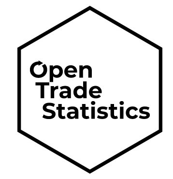

May 13, 2019
rOpenSci HQ
- Video of our Community Call on Security for R is up, along with a long list of resources. Hear from Bob Rudis on Zen and the art of ensuring confidentiality and integrity in analytics workflows and Ildi Czeller on authorization vs authentication explained through signing commits: why you should do it and how the ropsec package helps you do it the right way.
- Our Community Manager Stefanie Butland is speaking at an R-Ladies Seattle meetup Wed May 22nd on the theme of Learning R and Building Community. Other speakers are Malisa Smith, Bioinformatician at University of Washington, and Pamela Moriarty, Data Scientist at Zulily. See https://ropensci.org/events/ for details.
- The Scientific Committee on Antarctic Research is partnering with rOpenSci and the Antarctic Biodiversity Portal in organizing a short course on tools for Southern Ocean spatial analysis and modeling using R. Apply by Friday, June 15th. See https://github.com/SCAR/EGABIcourse19 for details.
Software 📦
CRAN:  GitHub:
GitHub: 
New Versions
- A new version (
v0.2.9) ofstplanris on CRAN - sustainable transport planning. See the release notes for changes. Checkout the docs to get started.

new fxns
od_aggregate_from()/od_aggregate_to(); updates to many fxns; better website - A new version (
v0.2.3) ofbikedatais on CRAN - download and aggregate data from public hire bicycle systems. See the release notes for changes. Checkout the docs to get started.
fix
dl_bikedatafor Philadelphia - A new version (
v0.9.7) oftaxizeis on CRAN - taxonomic toolbelt for R. See the release notes for changes. Checkout the taxize book to get started.
class2tree()gains node labels when present - A new version (
v0.6.0) ofrerddapis on CRAN - General Purpose Client for ERDDAP Servers. See the release notes for changes. Checkout the vignettes to get started.
info()gains base url in its output; improvedgriddap()docs and bug fixes - A new version (
v1.3.0) ofrgbifis on CRAN - interface to the Global Biodiversity Information Facility API. See the release notes for changes. Checkout the occurrence manual to get started.
occ_download()/occ_download_prep()gain new param. format (you can now get species lists) - A new version (
v0.4.2) ofrdataciteis on CRAN - client for DataCite. See the release notes for changes. Checkout the README to get started.
fixes for encoding in test fixtures
- A new version (
v0.9.2) ofrcrossrefis on CRAN - R client for the Crossref API. See the release notes for changes. Checkout the rcrossref vignette to get started.
main rcrossref fxns gain option to do progress bar when doing deep pagination
- A new version (
v0.8.0) ofrbisonis on CRAN - interface to the USGS BISON API. See the release notes for changes. Checkout the vignette to get started.
update readme/vignette wrt relationship between GBIF and BISON
- A new version (
v0.8.6) ofrplosis on CRAN - Interface to the Search API for Public Library of Science journals. See the release notes for changes. Checkout the vignettes to get started.
fixes for encoding in test fixtures
- A new version (
v1.2.2) ofrentrezis on CRAN - ENTREZ in R. See the release notes for changes. Checkout the vignette to get started.
force curl to use http/1.1; fix in
parse_pubmed_xml; docs clarification forextract_from_esummary
Software Review ✔
We accept community contributed packages via our onboarding system - an open software review system, sorta like scholarly paper review, but way better. We’ll highlight newly onboarded packages here. A huge thanks to our reviewers, who do a lot of work reviewing (see the blog post on our review system), and the authors of the packages!
If you want to be a reviewer fill out this short form, and we’ll ping you when there’s a submission that fits in your area of expertise.
The following package was recently submitted:
- rnassqs > Access the NASS Quick Stats API
- Author: Nicholas Potter
- Issue: ropensci/onboarding#298
- Reviewers: not yet assigned
The following two packages recently went through our onboarding process and have been approved:
- rromeo > An R Client for SHERPA/RoMEO API
- Author: Matthias Grenié
- Issue: ropensci/onboarding#285
- Reviewers:
- tidync > A Tidy Approach to ‘NetCDF’ Data Exploration and Extraction
- Author: Michael Sumner
- Issue: ropensci/onboarding#174
- Reviewers:
On the blog
Main blog
Julia Silge wrote a post on Relaunching the qualtRics package for the qualtRics package she maintains.
Pachá wrote a post on Open Trade Statistics for the tradestatistics package he maintains.

Use Cases
The following 10 works use/cite rOpenSci software:
- Hoban et al. used rgbif in their paper Inference of biogeographic history by formally integrating distinct lines of evidence: genetic, environmental niche, and fossil 1
- Peignier et al. used spatsoc in their paper Space use and social association in a gregarious ungulate: Testing the conspecific attraction and resource dispersion hypotheses 2
- Campbell used plotly in their book Learn RStudio IDE 3
- Iqbal used pdftools in their paper Managerial Self-Attribution Bias and Banks’ Future Performance: Evidence from Emerging Economies 4
- Pinsky et al. used rfishbase and rnoaa in their paper Greater vulnerability to warming of marine versus terrestrial ectotherms 5
- Bacci et al. used rgbif in their paper Revisiting the classification of Melastomataceae: implications for habit and fruit evolution 6
- Domingos used rgbif in their thesis Oportunidades e desafios em macroecologia marinha 7
- Robbins et al. used nasapower in their paper The Scope and Impact of Open Source Software as Intangible Capital: A Framework for Measurement with an Application Based on the Use of R Packages 8
- Seyednasrollah et al. used plotly in their paper Data extraction from digital repeat photography using xROI: An interactive framework to facilitate the process 9
- Nicolas et al. used hunspell in their paper Automated Dictionary Creation for Analyzing Text: An Illustration from Stereotype Content 10
There’s three recent use cases in the Use Cases section of the rOpenSci discussion forum:
- qualtRics: the Stack Overflow Developer Survey by Julia Silge
- Using drake to power a new soil respiration database by Ben Bond Lamberty
- Can rainfall be a useful predictor of epidemic risk across temporal and spatial scales by Emerson Del Ponte
In The News
Arvia Sreenivasan highlighted example rnaturalearth usage
Hey #rstats #ggplot2 mappers, are you still using the map_data() function? Be alerted to @rOpenSci 's fabulous rnaturalearth package. Optionally returns sf & includes a bunch of other useful data https://t.co/oCTZLdbUWu pic.twitter.com/7brxWbaw33
— ★ Arvi Sreenivasan (@arvi1000) April 12, 2019
Call For Contributors
Part of the mission of rOpenSci is making sustainable software that users can rely on. Some software maintainers need to give up maintenance due to a variety of circumstances. When that happens we try to find new maintainers.
We’ve had six recent examples of maintainer transitions within rOpenSci:
- RSelenium: now maintained by Ju Kim
- chromer: now maintained by Paula Andrea
- qualtRics: now maintained by Julia Silge
- rsnps: now maintained by Julia Gustavsen and Sina Rüeger
- rdpla: now maintained by Alyssa Columbus
- webchem: now maintained by Erik Sapper
We don’t have any packages looking for new maintainers - if you are a maintainer and want to hand over that role to someone else get in touch with us.
Related News
- A recent paper - The Scope and Impact of Open Source Software as Intangible Capital: A Framework for Measurement with an Application Based on the use of R Packages - happens to mention our packages hunspell and nasapower, and is an interesting read about open source software.
Keep up with rOpenSci
- Mailing list: Sign up with an email address to get this newsletter sent to your inbox -> ropensci.org/#subscribe
- Alternatively, you can subscribe to this newsletter via our XML feed at https://news.ropensci.org/feed.xml or our JSON feed at https://news.ropensci.org/feed.json
- rOpenSci on Twitter: @ropensci
- The rOpenSci blog at ropensci.org/blog - you can subscribe in any RSS aggregator, or manually via https://ropensci.org/feed.xml. We also announce new blog posts on our Twitter account.
Footnotes
-
Hoban, S., Dawson, A., Robinson, J. D., Smith, A. B., & Strand, A. E. (2019). Inference of biogeographic history by formally integrating distinct lines of evidence: genetic, environmental niche, and fossil. Ecography. https://doi.org/10.1111/ecog.04327 ↩
-
Peignier, M., Webber, Q. M. R., Koen, E. L., Laforge, M. P., Robitaille, A. L., & Vander Wal, E. (2019). Space use and social association in a gregarious ungulate: Testing the conspecific attraction and resource dispersion hypotheses. Ecology and Evolution. https://doi.org/10.1002/ece3.5071 ↩
-
Campbell, M. (2019). Learn RStudio IDE. https://doi.org/10.1007/978-1-4842-4511-8 ↩
-
Iqbal, J. (2019). Managerial Self-Attribution Bias and Banks’ Future Performance: Evidence from Emerging Economies. Journal of Risk and Financial Management, 12(2), 73. https://doi.org/10.3390/jrfm12020073 ↩
-
Pinsky, M. L., Eikeset, A. M., McCauley, D. J., Payne, J. L., & Sunday, J. M. (2019). Greater vulnerability to warming of marine versus terrestrial ectotherms. Nature, 569(7754), 108–111. https://doi.org/10.1038/s41586-019-1132-4 ↩
-
Bacci, L. F., Michelangeli, F. A., & Goldenberg, R. (2019). Revisiting the classification of Melastomataceae: implications for habit and fruit evolution. Botanical Journal of the Linnean Society, 190(1), 1–24. https://doi.org/10.1093/botlinnean/boz006 ↩
-
Domingos , A. M. (2019). Oportunidades e desafios em macroecologia marinha. https://repositorio.bc.ufg.br/tede/bitstream/tede/9530/5/Tese%20-%20Andr%C3%A9%20Menegotto%20Domingos%20-%202019.pdf ↩
-
Robbins, C., Korkmaz, G., Calderon, J. B. S., Chen, D., Schroeder, A., Kelling, C., … & Keller, S. (2019). The Scope and Impact of Open Source Software as Intangible Capital: A Framework for Measurement with an Application Based on the Use of R Packages. In Big Data for 21st Century Economic Statistics. University of Chicago Press. https://www.nber.org/chapters/c14271.pdf ↩
-
Seyednasrollah, B., Milliman, T., & Richardson, A. D. (2019). Data extraction from digital repeat photography using xROI: An interactive framework to facilitate the process. ISPRS Journal of Photogrammetry and Remote Sensing, 152, 132–144. https://doi.org/10.1016/j.isprsjprs.2019.04.009 ↩
-
Nicolas, G., Bai, X., & Fiske, S. T. (2019). Automated Dictionary Creation for Analyzing Text: An Illustration from Stereotype Content. https://psyarxiv.com/afm8k/download?format=pdf ↩